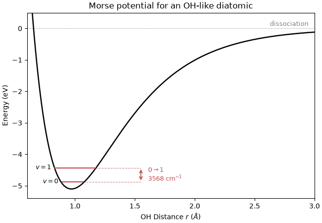
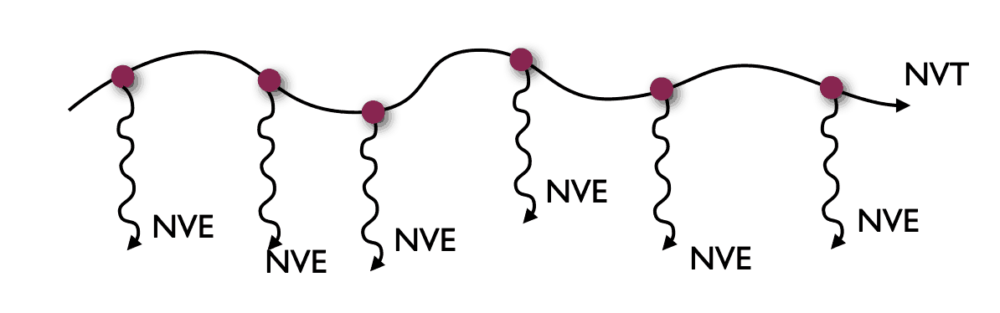
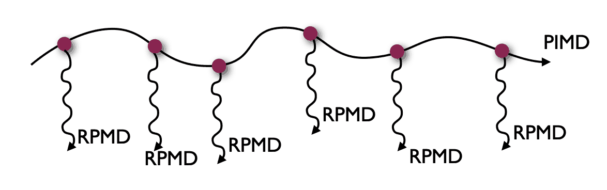
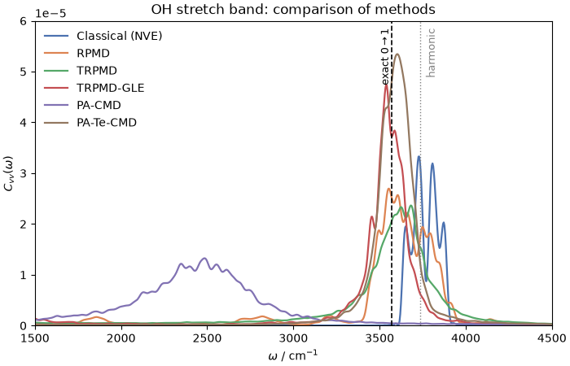
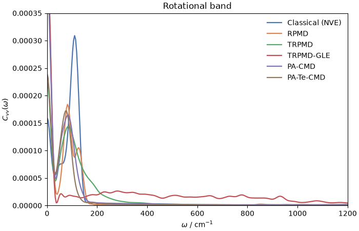
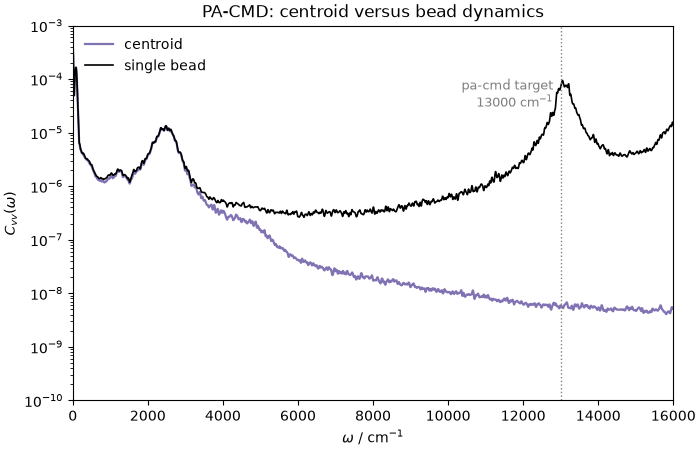

Note
Go to the end to download the full example code.
Path integral approximations to real-time correlations¶
- Authors:
Mariana Rossi (translator to Cookbook format - older tutorials by more authors)
Vibrational spectra are the Fourier transform of a real-time quantum correlation function, and computing that (quantum) object exactly is out of reach for anything but the smallest systems. Path-integral methods sidestep the problem by replacing the exact correlation function with an approximate correlation function evaluated with some protocol on top of the dynamics of the ring-polymer.
This recipe uses a 3D Morse oscillator, a model cheap enough that different approximations can be compared side by side, to show what each approximation does to a vibrational lineshape and where each one breaks down. Its radial part is
where \(D\) is 5.101744 eV, \(a\) is 2.1930272 \(\mathring{A}^{-1}\) and \(r_0\) is 0.96966 \(\mathring{A}\). These parameters are very close to those that describe an OH radical, as tabulated in books such as [Huber1979].
The potential is central: it depends only on the interatomic distance \(r = |\mathbf{r}_1 - \mathbf{r}_2|\), so the molecule rotates freely and the two angular degrees of freedom are unconstrained. This is why the spectra below show a rotational band at low frequency in addition to the stretch.
This tutorial will use the i-PI code to perform the simulations. To avoid any conversion problems, the values of these quantities in atomic units are \(D=0.18748563\), \(a=1.1605\) and \(r_0=1.8323918\). These are parameters that can be passed directly into the i-PI potential.
from zipfile import ZipFile
import numpy as np
from atomistic_cookbook_utils import download_with_retry
from matplotlib import pyplot as plt
# The i-PI inputs, checkpoints and pre-computed spectra for this recipe are
# hosted on Zenodo; see the "Vibrational Spectra" section below for the
# download step.
ZENODO_RECORD_ID = "21607883"
# Conversion factors used throughout
HARTREE_TO_CM1 = 219474.63 # atomic units of frequency -> cm^-1
CM1_TO_EV = 1.239841984e-4
# Spectroscopic constants of the model, in cm^-1
WE = 3737.76 # harmonic frequency
XE = 84.881 # first anharmonicity constant
# One colour per method, reused in every figure so the curves stay comparable
COLORS = {
"nve": "#4c72b0",
"rpmd": "#dd8452",
"trpmd": "#55a868",
"trpmd-gle": "#c44e52",
"cmd": "#8172b3",
"hot-pa-cmd": "#937860",
}
LABELS = {
"nve": "Classical (NVE)",
"rpmd": "RPMD",
"trpmd": "TRPMD",
"trpmd-gle": "TRPMD-GLE",
"cmd": "PA-CMD",
"hot-pa-cmd": "PA-Te-CMD",
}
# order used consistently in every comparison figure and table
METHODS = ["nve", "rpmd", "trpmd", "trpmd-gle", "cmd", "hot-pa-cmd"]
The potential¶
Let us plot the potential to visualize it. Because the Morse oscillator is one of the few anharmonic potentials with an analytic spectrum, we also know exactly where its vibrational levels sit,
which gives a fundamental \(0 \rightarrow 1\) transition at 3568 cm \(^{-1}\), red-shifted from the harmonic frequency of 3738 cm \(^{-1}\). Every method below is judged against that exact number.
r0 = 0.96966 # A
def VmorseOH(r, r0):
"""Morse potential for the OH-like model, in eV."""
hbar = 6.582119569e-16 # eV s
c = 2.99792458e10 # cm/s
hc = hbar * c * 2 * np.pi # eV*cm
D = hc * WE**2 / (4 * XE) # eV
a = 2.1930272 # 1/A
return D * (np.exp(-2 * a * (r - r0)) - 2 * np.exp(-a * (r - r0)))
def morse_level(v):
"""Energy of vibrational level ``v`` above the potential minimum, in eV."""
return (WE * (v + 0.5) - XE * (v + 0.5) ** 2) * CM1_TO_EV
grid = np.arange(0.6, 5, 0.01)
well_depth = -VmorseOH(r0, r0) # dissociation energy D, in eV
fig, ax = plt.subplots(figsize=(6.5, 4.5), constrained_layout=True)
ax.plot(grid, VmorseOH(grid, r0), color="black", lw=1.8, zorder=3)
ARROW_X = 1.55 # where the transition arrow is drawn, clear of the potential
level_energy = {}
# Draw the two lowest vibrational levels across the classically allowed region,
# with a dashed guide extending out to the annotation
for v in (0, 1):
energy = -well_depth + morse_level(v)
level_energy[v] = energy
inside = grid[VmorseOH(grid, r0) <= energy]
ax.plot(
[inside[0], inside[-1]],
[energy, energy],
color=COLORS["trpmd-gle"],
lw=1.6,
zorder=4,
)
ax.plot(
[inside[-1], ARROW_X],
[energy, energy],
color=COLORS["trpmd-gle"],
lw=0.8,
ls="--",
alpha=0.7,
)
ax.text(inside[0] - 0.03, energy, f"$v={v}$", va="center", ha="right", fontsize=9)
# Annotate the fundamental transition
ax.annotate(
"",
xy=(ARROW_X, level_energy[1]),
xytext=(ARROW_X, level_energy[0]),
arrowprops=dict(arrowstyle="<->", color=COLORS["trpmd-gle"], lw=1.3),
)
ax.text(
ARROW_X + 0.06,
0.5 * (level_energy[0] + level_energy[1]),
r"$0\rightarrow1$" "\n" r"3568 cm$^{-1}$",
color=COLORS["trpmd-gle"],
fontsize=9,
va="center",
)
ax.axhline(0.0, color="gray", lw=0.8, ls=":")
ax.text(2.95, 0.08, "dissociation", color="gray", fontsize=9, ha="right")
ax.set_xlim([0.6, 3])
ax.set_ylim([-5.4, 0.5])
ax.set_ylabel("Energy (eV)")
ax.set_xlabel(r"OH Distance $r$ ($\AA$)")
ax.set_title("Morse potential for an OH-like diatomic")

Text(0.5, 1.0, 'Morse potential for an OH-like diatomic')
Vibrational Spectra¶
We will now run: classical simulations, RPMD simulations, two flavors of TRPMD simulations, and two flavors of partially-adiabatic CMD simulations (PA-CMD). The goal is to compare these spectra and understand the differences between the methods.
Warning
The PI simulations of this exercise are run at 109 K, but using 32 beads. Reaching convergence with respect to the number of beads for this quantity requires many more beads at this temperature. These settings are only sufficient for the pedagogical purposes of this exercise. Do not use them for production calculations.
In addition, we only perform short/few simulations, which also do not represent statistical convergence.
Note
All the inputs below use ffdirect with a custom potential
(morsedia_ffdirect.py) instead of a socket driver, so i-PI evaluates
the Morse model internally and no separate driver process has to be
started. The pes_path entry in each XML is a relative path, so it
must match the location of morsedia_ffdirect.py relative to wherever
you run i-pi from.
The i-PI inputs, checkpoints and pre-computed spectra used below are
fetched from Zenodo and unpacked in the tmp/data folder.
with ZipFile(
download_with_retry(
f"https://zenodo.org/records/{ZENODO_RECORD_ID}/files/pi-vibrations-data.zip",
"tmp/pi-vibrations-data.zip",
)
) as archive:
archive.extractall(path="tmp")
1. Classical spectrum¶
We provide several i-PI checkpoints from a classical NVT simulation in the
folder tmp/data/class-therm. From these checkpoints we can start several
classical NVE simulations from which we can extract the vibrational density
of states (VDOS) from the velocity autocorrelation function,
The idea is to start many NVE trajectories from these pre-thermalized checkpoints, as sketched below.


A single thermostatted (NVT) trajectory is used as a reservoir of initial conditions: configurations are harvested along it and each one seeds an independent constant-energy (NVE) trajectory. The correlation function is then averaged over the NVE segments.¶
An input for the NVE simulations is found in tmp/data/inputs/nve.xml. Read
the input carefully! Let us echo it here:
with open("tmp/data/inputs/nve.xml") as f:
print(f.read())
<simulation verbosity='low'>
<output prefix='simulation'>
<properties stride='200' filename='out'> [ step, time{picosecond}, conserved, temperature{kelvin}, kinetic_md{electronvolt}, kinetic_cv{electronvolt}, potential{electronvolt} ] </properties>
<trajectory filename='pos' stride='2' flush='200'> positions{angstrom} </trajectory>
<trajectory filename='vel' stride='2' flush='200'> velocities </trajectory>
<checkpoint stride='4000'/>
</output>
<total_steps>20000</total_steps>
<prng>
<seed>32415</seed>
</prng>
<ffdirect name='driver' pbc='false'>
<pes> custom </pes>
<pes_path> ../../morsedia_ffdirect.py </pes_path>
<parameters> { D: 0.18748563, a: 1.1605, r0: 1.8323918 } </parameters>
</ffdirect>
<system>
<initialize nbeads='1'>
<file mode='chk'> therm.chk </file>
</initialize>
<forces>
<force forcefield='driver'> </force>
</forces>
<motion mode='dynamics'>
<fixcom> False </fixcom>
<dynamics mode='nve'>
<timestep units='femtosecond'> 0.5 </timestep>
</dynamics>
</motion>
<ensemble>
<temperature units='kelvin'> 109 </temperature>
</ensemble>
</system>
</simulation>
The block that governs the dynamics is the following:
<motion mode='dynamics'>
<fixcom> False </fixcom>
<dynamics mode='nve'>
<timestep units='femtosecond'> 0.5 </timestep>
</dynamics>
</motion>
Note that mode='nve' means no thermostat is attached, so the dynamics is
purely Hamiltonian, and that fixcom is set to False, so the centre of
mass is free to drift. We note that one could also attach a very gently
global thermostat to the centroid to improve ergodicity without further
consequences.
You will run i-PI in a separate terminal - not directly from this
recipe. Pre-thermalized starting points for these child NVE trajectories
can be found in tmp/data/class-therm/.
Make several different folders and add different thermalized checkpoints to each of them.
Enter one of the folders and copy the file
nve.xmlthere. Make sure this file is referencing the right checkpoint file to initialize, and thatpes_pathpoints atmorsedia_ffdirect.py.Start one simulation inside a given folder. Run:
i-pi nve.xml &> log.ipi
Around 10 trajectories starting from different starting points should give a reasonably converged result. However, a single one is already fine to see qualitative results.
You can watch the trajectory to see how the OH molecule is moving, if you are using your computer. Programs like Ovito and VMD can easily do this.
When the simulation is done, build the velocity autocorrelation function
and its Fourier transform. This can be easily achieved with the
i-pi-getacf script. In a folder where you have run your trajectory,
type:
i-pi-getacf -ifile simulation.vel_0.xyz -mlag 1024 -ftpad 3072 \
-ftwin cosine-hanning -dt "1.0 femtosecond" -oprefix nve
This computes the autocorrelation of the system velocity acf and its
Fourier transform facf, which gives you the VDOS. Note that to smoothen
the VDOS we have used a cosine-hanning window function. Read the help function of
the script for more details, i-pi-getacf -h. Feel free to increase
mlag, and play with different window functions to see how they affect
the spectrum.
If you have many trajectories, run the script above for each trajectory in each directory and average the VDOS.
2. RPMD spectrum¶
We will now start to introduce nuclear quantum effects on these spectra. The first method we will try out is ring-polymer molecular dynamics ([Craig2004]).
We provide several i-PI checkpoints from a quantum PIMD simulation in the
folder tmp/data/pimd-therm. From these checkpoints we can start several
RPMD simulations from which we can extract the vibrational spectra. For
linear observables such as velocity, the RPMD centroid trajectory already
gives the correct Kubo-transformed correlation function to a good
approximation [Craig2004], which is why only the centroid velocities are
needed here. For genuinely non-linear quantities (e.g. a dipole moment),
centroid and bead-averaged expectation values no longer coincide, so a
bead-averaged estimator has to be used instead.
The workflow mirrors the classical case, with PIMD playing the role of the thermostatted reservoir and RPMD the role of the constant-energy segments:


Initial conditions for the RPMD trajectories are harvested along a thermostatted PIMD run. Each ring-polymer configuration then propagates without a thermostat, and the centroid velocity autocorrelation function is averaged over the resulting segments.¶
An input for the RPMD simulations is found in tmp/data/inputs/rpmd.xml.
Let us echo it here as well:
with open("tmp/data/inputs/rpmd.xml") as f:
print(f.read())
<simulation verbosity='low'>
<output prefix='simulation'>
<properties stride='200' filename='out'> [ step, time{picosecond}, conserved, temperature{kelvin}, kinetic_md{electronvolt}, kinetic_cv{electronvolt}, potential{electronvolt} ] </properties>
<!-- <trajectory filename='vel' stride='200' bead='1'> velocities </trajectory>
<trajectory filename='pos' stride='200' bead='1'> positions{angstrom} </trajectory> -->
<trajectory filename='xc' stride='4' > x_centroid{angstrom} </trajectory>
<trajectory filename='vc' stride='4' > v_centroid </trajectory>
<!-- <checkpoint stride='4000' overwrite='False'/> -->
</output>
<total_steps>40000</total_steps>
<prng>
<seed>3241</seed>
</prng>
<ffdirect name='driver' pbc='False'>
<pes> custom </pes>
<pes_path> ../../morsedia_ffdirect.py </pes_path>
<parameters> { D: 0.18748563, a: 1.1605, r0: 1.8323918 } </parameters>
</ffdirect>
<system>
<initialize nbeads='32'>
<file mode='chk'> therm_checkpoint.chk </file>
<!-- <cell mode='abc'> [100.0, 100.0, 100.0] </cell> -->
<!-- <velocities mode='thermal' units='kelvin'> 109 </velocities> -->
</initialize>
<forces>
<force forcefield='driver'> </force>
</forces>
<motion mode='dynamics'>
<fixcom> False </fixcom>
<dynamics mode='nve'>
<timestep units='femtosecond'> 0.25 </timestep>
<!-- <thermostat mode='pile_l'>
<tau units='femtosecond'> 10 </tau>
</thermostat> -->
</dynamics>
</motion>
<ensemble>
<temperature units='kelvin'> 109 </temperature>
</ensemble>
</system>
</simulation>
The block that governs the dynamics is the following:
<initialize nbeads='32'>
<file mode='chk'> therm_checkpoint.chk </file>
</initialize>
...
<motion mode='dynamics'>
<fixcom> False </fixcom>
<dynamics mode='nve'>
<timestep units='femtosecond'> 0.25 </timestep>
</dynamics>
</motion>
Compared with the classical input, two things have changed. The system is
now initialized with nbeads='32' instead of a single replica, so that
the ring polymer can represent the quantum statistics of the nucleus. And
the time step has been reduced from 0.5 fs to 0.25 fs. Although the dynamics
would be stable here with a time step of 0.5 fs, the smaller one is more
accurate. The dynamics is still mode='nve', with no
thermostat, exactly as in the classical case: the 109 K quantum statistics
already entered through the thermostatted PIMD reservoir that generated the
initial conditions, not through the correlation segment itself.
Make several different folders and add different thermalized checkpoints to each of them.
Enter one of the folders and copy the file
rpmd.xmlthere. Make sure this file is referencing the right checkpoint file to initialize.Start one simulation inside a given folder. Run:
i-pi rpmd.xml &> log.ipi
The same notes as for the classical spectrum also apply here.
When the simulation is done, build the centroid velocity autocorrelation
function and its Fourier transform, again with i-pi-getacf:
i-pi-getacf -ifile simulation.vc.xyz -mlag 1024 -ftpad 3072 \
-ftwin cosine-hanning -dt "1.0 femtosecond" -oprefix rpmd
3. TRPMD, TRPMD-GLE, CMD and Te-CMD spectra¶
We will now try out other approximations based on path integrals, which include nuclear quantum effects to some degree.
We will try thermostatted RPMD (TRPMD, [Rossi2014]), TRPMD with GLE thermostats (TRPMD-GLE, [Rossi2018]), partially-adiabatic centroid molecular dynamics (PA-CMD, [Cao1994], [Hone2006]) and partially-adiabatic elevated-temperature centroid molecular dynamics (PA-Te-CMD, [Castro2025]).
The files tmp/data/inputs/trpmd.xml, tmp/data/inputs/trpmd-gle.xml,
tmp/data/inputs/cmd.xml and tmp/data/inputs/hot-pa-cmd.xml contain the
corresponding inputs, and are run in exactly the same way as the RPMD input
above. Unlike RPMD, all four attach a thermostat somewhere in the dynamics,
and yet they still yield meaningful real-time correlation functions. The
reason is that the thermostat is applied mainly to the internal
ring-polymer modes rather than to the centroid, since the centroid has to
stay close to Newtonian dynamics for the correlation function to remain
physical.
TRPMD couples a global PILE thermostat to the ring-polymer normal modes:
<thermostat mode='pile_g'>
<tau units='femtosecond'> 1000 </tau>
<pile_lambda> 0.5 </pile_lambda>
</thermostat>
pile_lambda sets the damping strength of the Langevin thermostat to damp
each internal ring-polymer normal mode optimally, and tau
sets the centroid
coupling relaxation time for the global stochastic velocity-rescaling
thermostat that couples to it.
TRPMD-GLE replaces this thermostat with a colored-noise (generalized Langevin equation) one, fitted to a target spectral density:
<thermostat mode='nm_gle'>
<A shape='(32,2,2)'>
[ ... ]
</A>
</thermostat>
The A matrix (one 2x2 drift block per ring-polymer normal mode, omitted
above for brevity) was generated with gle4md and is
tuned to minimize spurious coupling on high-frequency stretches and bends
[Rossi2018]; see this paper for the exact
fitting procedure used here.
PA-CMD instead pushes the internal modes to high frequency rather than damping them at the physical frequency. Effectively, this creates the centroid potential of mean force on the fly. The code is:
<normal_modes>
<frequencies style='pa-cmd' units="inversecm"> [13000] </frequencies>
</normal_modes>
...
<thermostat mode='pile_g'>
<tau units='femtosecond'> 1000 </tau>
<pile_lambda> 0.01 </pile_lambda>
</thermostat>
The <frequencies style='pa-cmd'> tag rescales the mass of every
non-centroid mode so that it oscillates at 13000 cm
\(^{-1}\) for the free ring-polymer,
far above the physical stretch – this adiabatic separation
is revisited in the “Where do the beads vibrate?” figure below.
The underdamped thermostat acting on the internal modes of the RP
(pile_lambda=0.01) is needed, so it
does not broaden them enough to interact with the physical system – see
the supplementary material of this paper, Figs. S1 and S2, for the underlying
argument.
PA-Te-CMD (hot-pa-cmd.xml) combines the same adiabatic separation
with an elevated ensemble temperature, therefore also requiring fewer beads:
<initialize nbeads='16'>
...
</initialize>
...
<thermostat mode='pile_g'>
<tau units='femtosecond'> 10 </tau>
<pile_lambda> 0.001 </pile_lambda>
<pile_centroid_t units='kelvin'> 109 </pile_centroid_t>
</thermostat>
...
<ensemble>
<temperature units='kelvin'> 400 </temperature>
</ensemble>
Raising the ensemble temperature to 400 K dramatically alleviates
the curvature-driven smearing of the centroid potential of mean force.
The pile_centroid_t entry decouples the centroid from this elevated
temperature, so that it is still thermostatted at the physical 109 K.
Important
pile_centroid_t needs an
explicit units='kelvin' (or any other temperature unit) attribute,
unless you define the temperature in atomic units.
How the reference data was generated¶
If you could not run all the simulations yourself, the tmp/data directory
fetched above already contains pre-computed spectra, as
<method>_facf_avg.dat. They were produced as follows.
For each method, ten independent trajectories of 10 ps each were run
with i-PI 3.3.0, using the inputs in tmp/data/inputs unchanged apart from
the random seed and the name of the checkpoint used to initialize. The
classical trajectories start from the checkpoints in tmp/data/class-therm,
and all path-integral ones from those in tmp/data/pimd-therm, so that each
trajectory begins from an independent, pre-thermalized configuration.
The time step and bead number differ between methods, but the total simulated time does not:
method |
beads |
time step |
steps |
ensemble T |
|---|---|---|---|---|
Classical (NVE) |
1 |
0.5 fs |
20000 |
109 K |
RPMD, TRPMD, TRPMD-GLE |
32 |
0.25 fs |
40000 |
109 K |
PA-CMD |
32 |
0.025 fs |
400000 |
109 K |
PA-Te-CMD |
16 |
0.025 fs |
400000 |
400 K |
Each trajectory was then post-processed with i-pi-getacf using the same
settings quoted earlier in this recipe – -mlag 1024 -ftpad 3072 -ftwin
cosine-hanning -dt "1.0 femtosecond" – applied to the full-system
velocities (simulation.vel_0.xyz) for the classical run, and to the
centroid velocities (simulation.vc.xyz) for all path-integral runs. The
cmd-bead spectrum instead uses the velocities of a single bead.
Finally the ten resulting facf spectra were combined into the shipped
files by taking a plain arithmetic mean of the intensities, on the common
frequency grid. No smoothing, windowing or baseline correction was applied
beyond the window function already used by i-pi-getacf.
Note
Ten trajectories of 10 ps are enough to make the qualitative comparisons below, but not to converge the lineshapes. All the raw checkpoints and the resulting spectra are hosted on Zenodo (see above) rather than checked into this repository.
Plotting and Analysing¶
Let us now plot everything and try to make sense of what we got. You should try plotting your own trajectories, but just in case they are not available, we provide the pre-computed spectra described above.
i-pi-getacf writes frequencies in atomic units (inverse hartree), so
they have to be converted before plotting. The conversion factor is
and it is the same factor used for the harmonic frequencies discussed at the end of this recipe.
fig, ax = plt.subplots(figsize=(7, 4.5), constrained_layout=True)
for mm in METHODS:
velFT = np.loadtxt(f"tmp/data/{mm}_facf_avg.dat", usecols=(0, 1))
# Here we convert from atomic units of frequency (1/Ha) to cm-1
ax.plot(
velFT[:, 0] * HARTREE_TO_CM1,
velFT[:, 1],
label=LABELS[mm],
color=COLORS[mm],
lw=1.6,
)
# Exact fundamental transition, and the harmonic frequency for reference
ax.axvline(x=3568, color="black", lw=1.2, ls="--")
ax.text(
3568,
5.85e-5,
r"exact $0\rightarrow1$",
rotation=90,
ha="right",
va="top",
fontsize=9,
)
ax.axvline(x=WE, color="gray", lw=1.0, ls=":")
ax.text(
WE + 30,
5.85e-5,
"harmonic",
rotation=90,
ha="left",
va="top",
color="gray",
fontsize=9,
)
ax.set_xlim([1500, 4500])
ax.set_ylim([0, 6e-5])
ax.set_ylabel(r"$C_{vv}(\omega)$")
ax.set_xlabel(r"$\omega\ /\ \mathrm{cm}^{-1}$")
ax.set_title("OH stretch band: comparison of methods")
ax.legend(frameon=False)

<matplotlib.legend.Legend object at 0x709d4f053e00>
In the plot above, simulations are not fully converged. More statistics would be needed for that, and that would remove some of the noise. Nevertheless, the qualitative features we may want to look at are already clear. The lineshapes are best compared by eye against the two vertical markers.
The classical NVE peak sits close to the harmonic frequency rather than the (lower) quantum fundamental. At 109 K the thermal amplitude of the classical trajectory is much smaller than the zero-point delocalization of the quantum particle, so the classical motion probes a more harmonic region of the well than the quantum ground state does.
RPMD spectra can show extra, unphysical high-frequency features tied to the free ring-polymer normal modes – a well documented artifact [Rossi2014] – which is why thermostatted variants were developed. TRPMD removes these spurious resonances by damping the internal modes; TRPMD-GLE instead couples a colored-noise thermostat fitted to the physical spectral density [Rossi2018], which makes the stretch band sharper. See this reference for a detailed discussion of the trade-offs between the two.
PA-CMD shows a pronounced red-shift relative to all the other methods, a well known artifact known as the curvature problem: the centroid potential of mean force is smeared out by the delocalization of the ring polymer.
The elevated-temperature proposal was first discussed in [Musil2022], where the centroid potential of mean force is evaluated at a temperature high enough that the curvature problem is negligible, while the system itself evolves at the physical temperature. It is a very practical method that yields accurate spectra. The partially-adiabatic version of this method ([Castro2025]), which obtains the centroid force on the fly with a two-temperature path-integral Langevin thermostat rather than from a precomputed potential of mean force, is what we are running here.
The rotational band¶
The discussion above focused on the stretch band, but the low-frequency part of the spectrum is worth a look too. Let us zoom in on it. This region is dominated by the free rotation of the diatomic, and the methods differ here as well:
fig, ax = plt.subplots(figsize=(7, 4.5), constrained_layout=True)
for mm in METHODS:
velFT = np.loadtxt(f"tmp/data/{mm}_facf_avg.dat", usecols=(0, 1))
ax.plot(
velFT[:, 0] * HARTREE_TO_CM1,
velFT[:, 1],
label=LABELS[mm],
color=COLORS[mm],
lw=1.6,
)
ax.set_xlim([0, 1200])
ax.set_ylim([0, 3.5e-4])
ax.set_ylabel(r"$C_{vv}(\omega)$")
ax.set_xlabel(r"$\omega\ /\ \mathrm{cm}^{-1}$")
ax.set_title("Rotational band")
ax.legend(frameon=False)

<matplotlib.legend.Legend object at 0x709d4c9dcf50>
Where do the beads vibrate?¶
In the CMD run we also printed out the bead positions, so we can compare the
VDOS obtained from the centroid with the one obtained from an individual
bead. The whole point of the partially-adiabatic scheme is to push the
internal ring-polymer modes to frequencies far above the physical ones, and
the <frequencies style='pa-cmd'> tag in cmd.xml sets that target to
13000 cm \(^{-1}\). A logarithmic scale makes the effect obvious:
cmd_c = np.loadtxt("tmp/data/cmd_facf_avg.dat", usecols=(0, 1))
cmd_b = np.loadtxt("tmp/data/cmd-bead_facf_avg.dat", usecols=(0, 1))
fig, ax = plt.subplots(figsize=(7, 4.5), constrained_layout=True)
ax.semilogy(
cmd_c[:, 0] * HARTREE_TO_CM1,
cmd_c[:, 1],
color=COLORS["cmd"],
lw=1.6,
label="centroid",
)
ax.semilogy(
cmd_b[:, 0] * HARTREE_TO_CM1,
cmd_b[:, 1],
color="black",
lw=1.2,
label="single bead",
)
ax.axvline(x=13000, color="gray", lw=1.0, ls=":")
ax.text(
12800, 3e-5, "pa-cmd target\n13000 cm$^{-1}$", ha="right", color="gray", fontsize=9
)
ax.set_xlim([0, 16000])
ax.set_ylim([1e-10, 1e-3])
ax.set_ylabel(r"$C_{vv}(\omega)$")
ax.set_xlabel(r"$\omega\ /\ \mathrm{cm}^{-1}$")
ax.set_title("PA-CMD: centroid versus bead dynamics")
ax.legend(frameon=False)

<matplotlib.legend.Legend object at 0x709d4ca56210>
The bead spectrum carries a large peak close to the requested adiabatic frequency, which is entirely absent from the centroid spectrum. This is the adiabatic separation doing its job: the internal modes are driven so fast that they no longer mix with the physical stretch, and the centroid is left to move on the (curvature-affected) centroid potential of mean force.
Tip
tmp/data/harmonic contains i-PI inputs to compute the harmonic
vibrational frequency of this potential directly, using i-PI’s
geometry optimization and normal-mode analysis. The resulting
*.eigval file stores the squared frequencies in atomic units –
take the square root and multiply by 219474.63 to get cm
\(^{-1}\), the same conversion factor used for the spectra above –
if you would like to compare it with the anharmonic spectra.
References¶
K. P. Huber and G. Herzberg, Molecular Spectra and Molecular Structure IV. Constants of Diatomic Molecules (Van Nostrand Reinhold, New York, 1979), p. 508.
J. Cao and G. A. Voth, The formulation of quantum statistical mechanics based on the Feynman path centroid density. II. Dynamical properties, J. Chem. Phys. 100, 5106 (1994). https://doi.org/10.1063/1.467176
I. R. Craig and D. E. Manolopoulos, Quantum statistics and classical mechanics: Real time correlation functions from ring polymer molecular dynamics, J. Chem. Phys. 121, 3368 (2004). https://doi.org/10.1063/1.1777575
T. D. Hone, P. J. Rossky and G. A. Voth, A comparative study of imaginary time path integral based methods for quantum dynamics, J. Chem. Phys. 124, 154103 (2006). https://doi.org/10.1063/1.2186636
M. Rossi, M. Ceriotti and D. E. Manolopoulos, How to remove the spurious resonances from ring polymer molecular dynamics, J. Chem. Phys. 140, 234116 (2014). https://doi.org/10.1063/1.4883861
M. Rossi, V. Kapil and M. Ceriotti, Fine tuning classical and quantum molecular dynamics using a generalized Langevin equation, J. Chem. Phys. 148, 102301 (2018). https://doi.org/10.1063/1.4990536
F. Musil, I. Zaporozhets, F. Noe, C. Clementi and V. Kapil, Quantum dynamics using path integral coarse-graining, J. Chem. Phys. 157, 181102 (2022). https://doi.org/10.1063/5.0120386
J. Castro, G. Trenins, V. Kapil and M. Rossi, Vibrational spectra of materials and molecules from partially adiabatic elevated-temperature centroid molecular dynamics, J. Chem. Phys. 163, 204102 (2025). https://doi.org/10.1063/5.0300048
sphinx_gallery_thumbnail_number = 2
Total running time of the script: (0 minutes 0.577 seconds)